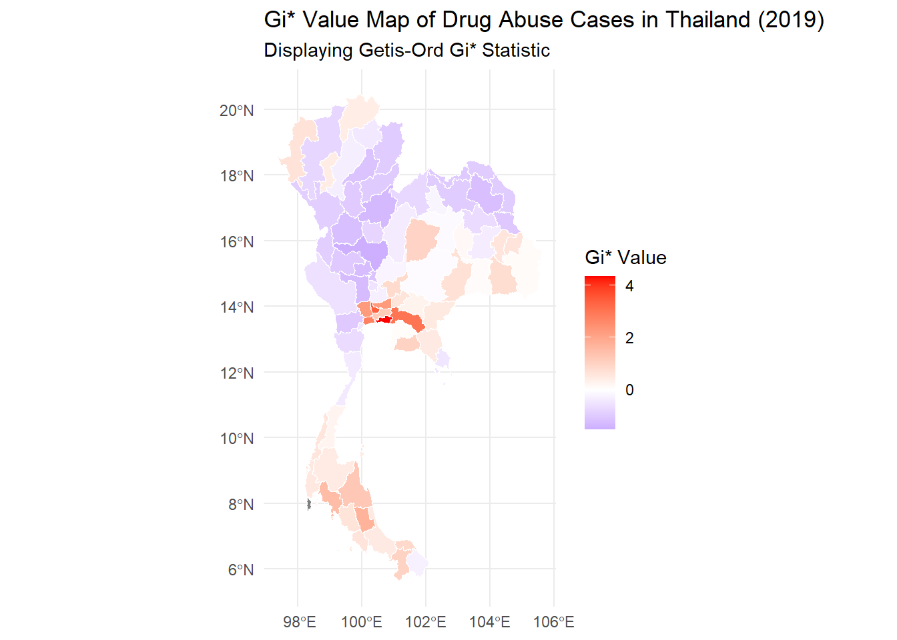

pacman::p_load(sf, spdep, tmap, tidyverse, lubridate, scales, sfdep, dplyr,patchwork,plotly)Application of Geospatial Analysis Methods to Discover Thailand Drug Abuse at the Province Level
Introduction
Drug abuse is associated with significant negative health, financial and social consequences. Yet, illicit drug consumption remains highly prevalent and continues to be a growing problem worldwide. In 2021, 1 in 17 people aged 15–64 in the world had used a drug in the past 12 months. Notwithstanding population growth, the estimated number of drug users grew from 240 million in 2011 to 296 million in 2021.
The geopolitics of Thailand which is near the Golden Triangle of Indochina, the largest drug production site in Asia, and the constant transportation infrastructure development made Thailand became market and transit routes for drug trafficking to the third countries.
In Thailand, drug abuse is one of the major social issue. There are about 2.7 million youths using drugs in Thailand. Among youths aged between 15 and 19 years, there are about 300,000 who have needs for drug treatment. Most of Thai youths involved with drugs are vocational-school students, which nearly doubles in number compared to secondary-school students.
This report aims to investigate three key aspects of drug abuse in Thailand:
- Spatial Dependency: We will examine whether key indicators of drug abuse in Thailand are independent of geographical location or exhibit spatial patterns.
- Cluster and Outlier Analysis: If spatial dependency is confirmed, we will identify and analyze clusters of high drug abuse rates and any outliers in the data.
- Temporal Evolution: We will investigate how these spatial patterns and clusters have changed over time.
Initial Hypothesis
We hypothesize that key indicators of drug abuse in Thailand are spatially dependent, with clusters of high drug use cases likely concentrated near the Golden Triangle and urban centers.
Rationale:
- Proximity to the Golden Triangle: Thailand’s location near this major drug production area suggests higher drug abuse rates in border regions due to easier access and established trafficking routes.
- Urban Concentration: Drug abuse is expected to cluster in urban areas due to higher population density, diverse social networks, and potentially greater drug availability.
To test this hypothesis, we will begin with an exploratory data analysis (EDA) of the overall dataset.
Datasets
Thailand Drug Offenses [2017-2022]
This dataset presents statistics related to different types of drug offenses in Thailand, categorized by fiscal year. The data provides insights into the prevalence of various drug-related cases and their distribution across different provinces.
Sourced from the Office of the Narcotics Control Board
Column Descriptions:
| Column | Description |
|---|---|
| fiscal_year | The fiscal year during which the drug offenses were recorded. |
| types_of_drug_offenses | The specific type or category of drug offense being reported. The types include drug use cases, suspects in drug use cases, possession cases, suspects in possession cases, possession with intent to distribute cases, suspects in possession with intent to distribute cases, trafficking cases, suspects in trafficking cases, production cases, suspects in production cases, import cases, suspects in import cases, export cases, suspects in export cases, conspiracy cases, and suspects in conspiracy cases. |
| no_cases | The total number of cases recorded for the specific combination of fiscal year, type of drug offense, and province. |
| province_th | The name of the province in Thailand, written in Thai. |
| province_en | The name of the province in Thailand, written in English. |
Thailand - Subnational Administrative Boundaries
For this analysis, we will utilize the Thailand Subnational Administrative Boundaries dataset, which provides detailed geographical information at various administrative levels, obtained from https://data.humdata.org/dataset/cod-ab-tha?
This comprehensive dataset was developed and vetted by Information Technology Outreach Services (ITOS) with funding from USAID, ensuring its reliability and accuracy for research purposes.
Focus on Provincial Level
Our analysis will primarily concentrate on Administrative Level 1, which corresponds to Thailand’s provincial boundaries. This level of granularity provides an optimal balance between detail and manageability for our spatial analysis of drug abuse patterns across the country.
Data Wrangling & Overall Exploratory Data Analysis
adm1 <- st_read(dsn = "data/adm", layer = "tha_admbnda_adm1_rtsd_20220121")Reading layer `tha_admbnda_adm1_rtsd_20220121' from data source
`C:\zcchong\IS415\Takehome_Ex\Takehome_Ex2\data\adm' using driver `ESRI Shapefile'
Simple feature collection with 77 features and 16 fields
Geometry type: MULTIPOLYGON
Dimension: XY
Bounding box: xmin: 97.34336 ymin: 5.613038 xmax: 105.637 ymax: 20.46507
Geodetic CRS: WGS 84st_crs(adm1)Coordinate Reference System:
User input: WGS 84
wkt:
GEOGCRS["WGS 84",
DATUM["World Geodetic System 1984",
ELLIPSOID["WGS 84",6378137,298.257223563,
LENGTHUNIT["metre",1]]],
PRIMEM["Greenwich",0,
ANGLEUNIT["degree",0.0174532925199433]],
CS[ellipsoidal,2],
AXIS["latitude",north,
ORDER[1],
ANGLEUNIT["degree",0.0174532925199433]],
AXIS["longitude",east,
ORDER[2],
ANGLEUNIT["degree",0.0174532925199433]],
ID["EPSG",4326]]adm1Simple feature collection with 77 features and 16 fields
Geometry type: MULTIPOLYGON
Dimension: XY
Bounding box: xmin: 97.34336 ymin: 5.613038 xmax: 105.637 ymax: 20.46507
Geodetic CRS: WGS 84
First 10 features:
Shape_Leng Shape_Area ADM1_EN ADM1_TH ADM1_PCODE
1 2.417227 0.13133873 Bangkok กรุงเทพมหานคร TH10
2 1.695100 0.07926199 Samut Prakan สมุทรปราการ TH11
3 1.251111 0.05323766 Nonthaburi นนทบุรี TH12
4 1.884945 0.12698345 Pathum Thani ปทุมธานี TH13
5 3.041716 0.21393797 Phra Nakhon Si Ayutthaya พระนครศรีอยุธยา TH14
6 1.739908 0.07920961 Ang Thong อ่างทอง TH15
7 5.693342 0.54578838 Lop Buri ลพบุรี TH16
8 1.778326 0.06872655 Sing Buri สิงห์บุรี TH17
9 2.896316 0.20907828 Chai Nat ชัยนาท TH18
10 4.766446 0.29208711 Saraburi สระบุรี TH19
ADM1_REF ADM1ALT1EN ADM1ALT2EN ADM1ALT1TH ADM1ALT2TH ADM0_EN ADM0_TH
1 <NA> <NA> <NA> <NA> <NA> Thailand ประเทศไทย
2 <NA> <NA> <NA> <NA> <NA> Thailand ประเทศไทย
3 <NA> <NA> <NA> <NA> <NA> Thailand ประเทศไทย
4 <NA> <NA> <NA> <NA> <NA> Thailand ประเทศไทย
5 <NA> <NA> <NA> <NA> <NA> Thailand ประเทศไทย
6 <NA> <NA> <NA> <NA> <NA> Thailand ประเทศไทย
7 <NA> <NA> <NA> <NA> <NA> Thailand ประเทศไทย
8 <NA> <NA> <NA> <NA> <NA> Thailand ประเทศไทย
9 <NA> <NA> <NA> <NA> <NA> Thailand ประเทศไทย
10 <NA> <NA> <NA> <NA> <NA> Thailand ประเทศไทย
ADM0_PCODE date validOn validTo geometry
1 TH 2019-02-18 2022-01-22 -001-11-30 MULTIPOLYGON (((100.6139 13...
2 TH 2019-02-18 2022-01-22 -001-11-30 MULTIPOLYGON (((100.7306 13...
3 TH 2019-02-18 2022-01-22 -001-11-30 MULTIPOLYGON (((100.3415 14...
4 TH 2019-02-18 2022-01-22 -001-11-30 MULTIPOLYGON (((100.8916 14...
5 TH 2019-02-18 2022-01-22 -001-11-30 MULTIPOLYGON (((100.5131 14...
6 TH 2019-02-18 2022-01-22 -001-11-30 MULTIPOLYGON (((100.3332 14...
7 TH 2019-02-18 2022-01-22 -001-11-30 MULTIPOLYGON (((101.3453 15...
8 TH 2019-02-18 2022-01-22 -001-11-30 MULTIPOLYGON (((100.3691 15...
9 TH 2019-02-18 2022-01-22 -001-11-30 MULTIPOLYGON (((100.1199 15...
10 TH 2019-02-18 2022-01-22 -001-11-30 MULTIPOLYGON (((101.3994 15...# Load the dataset
data <- read_csv("data/thai_drug_offenses_2017_2022.csv")
# 1. Basic information about the dataset
str(data)spc_tbl_ [7,392 × 5] (S3: spec_tbl_df/tbl_df/tbl/data.frame)
$ fiscal_year : num [1:7392] 2017 2017 2017 2017 2017 ...
$ types_of_drug_offenses: chr [1:7392] "drug_use_cases" "drug_use_cases" "drug_use_cases" "drug_use_cases" ...
$ no_cases : num [1:7392] 11871 200 553 450 378 ...
$ province_th : chr [1:7392] "กรุงเทพมหานคร" "ชัยนาท" "นนทบุรี" "ปทุมธานี" ...
$ province_en : chr [1:7392] "Bangkok" "Chai Nat" "Nonthaburi" "Pathum Thani" ...
- attr(*, "spec")=
.. cols(
.. fiscal_year = col_double(),
.. types_of_drug_offenses = col_character(),
.. no_cases = col_double(),
.. province_th = col_character(),
.. province_en = col_character()
.. )
- attr(*, "problems")=<externalptr> summary(data) fiscal_year types_of_drug_offenses no_cases province_th
Min. :2017 Length:7392 Min. : 0.0 Length:7392
1st Qu.:2018 Class :character 1st Qu.: 1.0 Class :character
Median :2020 Mode :character Median : 70.0 Mode :character
Mean :2020 Mean : 535.3
3rd Qu.:2021 3rd Qu.: 623.0
Max. :2022 Max. :17131.0
province_en
Length:7392
Class :character
Mode :character
# 2. Distribution of cases across years
yearly_cases <- data %>%
group_by(fiscal_year) %>%
summarize(Total_Cases = sum(no_cases))
ggplot(yearly_cases, aes(x = fiscal_year, y = Total_Cases, group = 1)) +
geom_line(color = "skyblue", size = 1) +
geom_point(color = "darkblue", size = 3) +
labs(title = "Trend of Total Drug Offense Cases by Fiscal Year",
x = "Fiscal Year", y = "Total Cases") +
theme_minimal() +
scale_y_continuous(labels = comma) +
scale_x_continuous(breaks = yearly_cases$fiscal_year) +
theme(axis.text.x = element_text(angle = 45, hjust = 1))# 3. Types of drug offenses
offense_types <- data %>%
group_by(types_of_drug_offenses) %>%
summarize(Total_Cases = sum(no_cases)) %>%
arrange(desc(Total_Cases))
ggplot(offense_types, aes(x = reorder(types_of_drug_offenses, -Total_Cases), y = Total_Cases)) +
geom_bar(stat = "identity", fill = "lightgreen") +
labs(title = "Total Cases by Type of Drug Offense",
x = "Type of Offense", y = "Total Cases") +
theme_minimal() +
theme(axis.text.x = element_text(angle = 45, hjust = 1)) +
scale_y_continuous(labels = comma)# 4. Geographical distribution of cases
province_cases <- data %>%
group_by(province_en) %>%
summarize(Total_Cases = sum(no_cases)) %>%
arrange(desc(Total_Cases))
top_10_provinces <- head(province_cases, 10)
ggplot(top_10_provinces, aes(x = reorder(province_en, -Total_Cases), y = Total_Cases)) +
geom_bar(stat = "identity", fill = "salmon") +
labs(title = "Top 10 Provinces by Total Drug Offense Cases",
x = "Province", y = "Total Cases") +
theme_minimal() +
theme(axis.text.x = element_text(angle = 45, hjust = 1)) +
scale_y_continuous(labels = comma)# 5. Trends over time for top offenses
top_5_offenses <- head(offense_types$types_of_drug_offenses, 5)
trends_data <- data %>%
filter(types_of_drug_offenses %in% top_5_offenses) %>%
group_by(fiscal_year, types_of_drug_offenses) %>%
summarize(Total_Cases = sum(no_cases))
ggplot(trends_data, aes(x = fiscal_year, y = Total_Cases, color = types_of_drug_offenses)) +
geom_line() +
geom_point() +
labs(title = "Trends of Top 5 Drug Offenses Over Time",
x = "Fiscal Year", y = "Total Cases") +
theme_minimal() +
scale_y_continuous(labels = comma)
- Trend of Total Drug Offense Cases by Fiscal Year:
- There’s a general upward trend in total drug offense cases from 2017 to 2021, with a sharp increase in 2021.
- The number of cases rose from about 550,000 in 2017 to a peak of nearly 850,000 in 2021.
- However, there’s a dramatic drop in 2022, falling to approximately 450,000 cases. This sudden decrease might be due to policy changes, reporting adjustments, or external factors like the COVID-19 pandemic.
- Total Cases by Type of Drug Offense:
- Drug use and possession are the most common offenses, each accounting for over 750,000 cases.
- There’s a significant drop-off after the top two categories, with “suspects in possession” and “possession with intent to distribute” being the next most frequent offenses.
- Trafficking, production, conspiracy, import, and export cases are comparatively rare.
- Top 10 Provinces by Total Drug Offense Cases:
- Bangkok has by far the highest number of cases, with nearly 300,000 - more than double the next highest province.
- Nakhon Si Thammarat, Songkhla, and Surat Thani follow, each with over 100,000 cases.
- Trends of Top 5 Drug Offenses Over Time:
All major offense types show similar trends, with a sharp spike in 2021 followed by a significant drop in 2022.
Drug use and possession cases are consistently the highest, often overlapping on the graph.
“Suspects in possession with intent to distribute” cases show a less dramatic increase in 2021 compared to other offense types.
The 2022 decrease is consistent across all offense types, supporting the idea of a systemic change rather than a category-specific shift.
Following which, we will verify the consistency between the province names in the shapefile and those in the CSV dataset.
This crucial step ensures accurate spatial analysis by confirming that our geographical data (shapefile) aligns properly with our drug offense statistics (CSV file). Any discrepancies in naming conventions or data structure will need to be addressed before proceeding with more advanced spatial analyses.
# Get unique province names from both datasets
shapefile_provinces <- unique(adm1$ADM1_EN)
data_provinces <- unique(data$province_en)
# Create a comparison dataframe
comparison <- data.frame(
shapefile_provinces = sort(shapefile_provinces),
data_provinces = sort(data_provinces)
)
# Check for exact matches
comparison$exact_match <- comparison$shapefile_provinces == comparison$data_provinces
# Print provinces that don't match exactly
mismatches <- comparison[!comparison$exact_match, ]
print("Provinces that don't match exactly:")[1] "Provinces that don't match exactly:"print(mismatches) shapefile_provinces data_provinces exact_match
4 Bueng Kan buogkan FALSE
21 Loei Loburi FALSE
22 Lop Buri Loei FALSE# Function to calculate string similarity
string_similarity <- function(a, b) {
agrepl(a, b, max.distance = 0.1)
}
# Check for similar names among mismatches
if(nrow(mismatches) > 0) {
for(i in 1:nrow(mismatches)) {
similar <- sapply(data_provinces, function(x) string_similarity(mismatches$shapefile_provinces[i], x))
if(any(similar)) {
cat("Possible match for", mismatches$shapefile_provinces[i], ":", data_provinces[similar], "\n")
}
}
}Possible match for Loei : Loei # Check for provinces in one dataset but not in the other
in_shapefile_not_in_data <- setdiff(shapefile_provinces, data_provinces)
in_data_not_in_shapefile <- setdiff(data_provinces, shapefile_provinces)
cat("\nProvinces in shapefile but not in data:\n")
Provinces in shapefile but not in data:print(in_shapefile_not_in_data)[1] "Lop Buri" "Bueng Kan"cat("\nProvinces in data but not in shapefile:\n")
Provinces in data but not in shapefile:print(in_data_not_in_shapefile)[1] "Loburi" "buogkan"# Function to update province names
update_province_name <- function(name) {
case_when(
name == "Loburi" ~ "Lop Buri",
name == "buogkan" ~ "Bueng Kan",
TRUE ~ name
)
}
# Update the province_en column
data$province_en <- sapply(data$province_en, update_province_name)
# Verify the changes
print(data %>%
filter(province_en %in% c("Lop Buri", "Bueng Kan", "Loei")) %>%
select(province_en) %>%
distinct())# A tibble: 3 × 1
province_en
<chr>
1 Lop Buri
2 Bueng Kan
3 Loei # Get unique province names from both datasets
shapefile_provinces <- unique(adm1$ADM1_EN)
data_provinces <- unique(data$province_en)
# Check for any remaining mismatches
mismatches <- setdiff(data_provinces, shapefile_provinces)
cat("\nAny remaining mismatches between data provinces and shapefile:\n")
Any remaining mismatches between data provinces and shapefile:print(mismatches)character(0)if (length(mismatches) == 0) {
cat("\nAll province names now match between the data file and the shapefile.\n")
}
All province names now match between the data file and the shapefile.# Additional check for case sensitivity
case_sensitive_mismatches <- setdiff(tolower(data_provinces), tolower(shapefile_provinces))
if (length(case_sensitive_mismatches) > 0) {
cat("\nWarning: Some provinces match when ignoring case, but have different capitalization:\n")
print(case_sensitive_mismatches)
}# Aggregate total cases by province
province_totals <- data %>%
group_by(province_en) %>%
summarize(total_cases = sum(no_cases))
# Join the totals with the spatial data
adm1_with_data <- adm1 %>%
left_join(province_totals, by = c("ADM1_EN" = "province_en"))
# Create the map with a red color scheme
ggplot(data = adm1_with_data) +
geom_sf(aes(fill = total_cases)) +
scale_fill_gradient(
low = "pink",
high = "darkred",
name = "Total Cases",
trans = "log",
labels = scales::comma_format()
) +
theme_minimal() +
labs(title = "Overview of Drug Offense Cases in Thailand",
subtitle = "Total cases by province (2017-2022)",
caption = "Data source: Office of the Narcotics Control Board") +
theme(
legend.position = "right",
plot.title = element_text(size = 16, face = "bold"),
plot.subtitle = element_text(size = 12),
legend.title = element_text(size = 10),
legend.text = element_text(size = 8)
)# Aggregate total cases by province and year
province_year_totals <- data %>%
group_by(province_en, fiscal_year) %>%
summarize(total_cases = sum(no_cases), .groups = "drop")
# Create a list of sf objects, one for each year
adm1_with_data_by_year <- map(unique(province_year_totals$fiscal_year), function(year) {
year_data <- province_year_totals %>%
filter(fiscal_year == year)
adm1 %>%
left_join(year_data, by = c("ADM1_EN" = "province_en"))
})
# Combine all years into one sf object
all_years_sf <- do.call(rbind, adm1_with_data_by_year)
# Create the faceted map
ggplot(data = all_years_sf) +
geom_sf(aes(fill = total_cases)) +
scale_fill_gradient(
low = "lightpink",
high = "darkred",
name = "Total Cases",
trans = "log",
labels = scales::comma_format()
) +
facet_wrap(~ fiscal_year, ncol = 3) +
theme_minimal() +
labs(title = "Drug Offense Cases in Thailand by Year",
subtitle = "Total cases by province (2017-2022)",
caption = "Data source: Office of the Narcotics Control Board") +
theme(
legend.position = "right",
plot.title = element_text(size = 16, face = "bold"),
plot.subtitle = element_text(size = 12),
legend.title = element_text(size = 10),
legend.text = element_text(size = 8),
axis.text.x = element_blank(),
axis.text.y = element_blank(),
axis.ticks = element_blank()
)An analysis of the overall drug offense cases reveal:
- Spatial Distribution:
- The maps reveal significant spatial variation in drug offense cases across Thailand’s provinces.
- Darker shades, indicating higher case numbers, are consistently observed in certain regions, particularly in the central, northern, and southern parts of the country.
- Bangkok (the small, dark area in the central region) consistently shows the highest concentration of cases across all years.
- Temporal Trends:
- The series of maps from 2017 to 2022 shows a general intensification of colors, suggesting an overall increase in drug offense cases over time.
- This trend is particularly noticeable from 2017 to 2021, with 2021 showing the darkest shades across most provinces.
- However, there’s a visible lightening of colors in 2022, indicating a decrease in cases compared to 2021.
- Regional Patterns:
- Northern provinces consistently show higher case numbers (darker shades) compared to northeastern provinces.
- Southern provinces, especially those in the narrow peninsula, maintain relatively high case numbers throughout the years.
- Central provinces surrounding Bangkok also exhibit consistently high case numbers.
- Variation in Impact:
- While some provinces remain consistently dark or light across the years, others show more variability, suggesting localized factors influencing drug offense rates.
Comparison to Initial Hypothesis:
Our initial hypothesis stated: “The key indicators of drug abuse in Thailand are spatially dependent, with clusters of high drug use cases likely to be found near borders and urban centers.”
The results largely support this hypothesis:
Spatial Dependency: The maps clearly show that drug offense cases are not randomly distributed but follow distinct spatial patterns, confirming spatial dependency.
Urban Centers: Bangkok consistently shows the highest concentration of cases, supporting the hypothesis about urban centers.
Border Regions: Many border provinces show higher case numbers, aligning with the hypothesis about border regions.
Clustering: The maps reveal clear clustering of high-case provinces, particularly in the central, northern, and southern regions.
Global Measures of Spatial Autocorrelation
In this section, we delve deeper into the spatial patterns of drug offenses across Thailand using global measures of spatial autocorrelation.
Focus on 2021 Data: Our analysis will concentrate on data from the fiscal year 2021. This decision is based on our initial exploratory data analysis, which revealed 2021 as the year with the highest number of reported drug offense cases. By focusing on this peak year, we aim to capture the most pronounced spatial patterns and relationships in our dataset.
Aggregation of Drug Offense Types: For this analysis, we have aggregated all types of drug offenses into a single metric. This approach allows us to examine the overall drug epidemic landscape without the complexity of distinguishing between different offense categories. Our primary concern is to understand the spatial distribution of the drug problem as a whole, rather than the nuances of specific offense types.
drug_summary_2021 <- data %>%
filter(fiscal_year == 2021) %>%
group_by(province_en) %>%
summarize(total_cases = sum(no_cases, na.rm = TRUE)) %>%
arrange(desc(total_cases))
# View the top 10 provinces
print(head(drug_summary_2021, 10))# A tibble: 10 × 2
province_en total_cases
<chr> <dbl>
1 Nakhon Si Thammarat 40983
2 Bangkok 37318
3 Chiang Mai 28778
4 Surat Thani 28566
5 Songkhla 28509
6 Ubon Ratchathani 28121
7 Khon Kaen 25903
8 Si Sa Ket 22484
9 Udon Thani 22449
10 Nakhon Ratchasima 21949# bar plot to visualize the top 10 provinces with the highest number of drug cases
top_10_provinces <- head(drug_summary_2021, 10)
ggplot(top_10_provinces, aes(x = reorder(province_en, total_cases), y = total_cases)) +
geom_bar(stat = "identity", fill = "skyblue") +
coord_flip() +
labs(title = "Top 10 Provinces with Highest Drug Cases in 2021",
x = "Province",
y = "Total Number of Cases") +
theme_minimal()ggplot(drug_summary_2021, aes(x = total_cases)) +
geom_histogram(binwidth = 1000, fill = "skyblue", color = "black") +
labs(title = "Distribution of Drug Cases Across Provinces in 2021",
x = "Total Number of Cases",
y = "Number of Provinces") +
theme_minimal()# Join the drug data with the shapefile
map_data <- adm1 %>%
left_join(drug_summary_2021, by = c("ADM1_EN" = "province_en"))
# Create the map
tmap_mode("plot") # Set tmap mode to static plot
map <- tm_shape(map_data) +
tm_fill("total_cases",
style = "quantile",
palette = "YlOrRd",
title = "Number of Drug Cases") +
tm_borders() +
tm_layout(title = "Drug Cases in Thailand (2021)",
legend.outside = TRUE)
# Display the map
map
# Ensure map_data is an sf object
map_data <- st_as_sf(map_data)
# Create neighbor list
nb <- st_contiguity(map_data)
# Create weights
weights <- st_weights(nb,allow_zero = TRUE)
# Ensure total_cases is numeric
map_data$total_cases <- as.numeric(map_data$total_cases)
# Calculate global Moran's I
moran_i <- global_moran_test(map_data$total_cases, nb, weights, zero.policy = TRUE)
print(moran_i)
Moran I test under randomisation
data: x
weights: listw
n reduced by no-neighbour observations
Moran I statistic standard deviate = 2.8146, p-value = 0.002442
alternative hypothesis: greater
sample estimates:
Moran I statistic Expectation Variance
0.198888805 -0.013333333 0.005685208 Based on the results of the global Moran’s I test, we can interpret the spatial autocorrelation of drug abuse cases in Thailand as follows:
Moran’s I statistic: 0.198888805 This positive value indicates a positive spatial autocorrelation, suggesting that provinces with similar numbers of drug abuse cases tend to be clustered together.
p-value: 0.002442 This p-value is well below the typical significance level of 0.05, indicating strong evidence against the null hypothesis of spatial randomness.
Interpretation: The Moran’s I test results provide strong statistical evidence for positive spatial autocorrelation in drug cases across Thailand’s provinces. This means that provinces with high numbers of drug cases tend to be located near other provinces with high numbers, and provinces with low numbers tend to be near other low-number provinces.
The low p-value (0.002442) indicates that this spatial pattern is statistically significant and very unlikely to have occurred by chance. This confirms our visual observations from the map and supports our initial hypothesis about the spatial dependency of drug offense patterns in Thailand.
# Perform Monte Carlo simulation
set.seed(123) # for reproducibility
moran_mc_res <- global_moran_perm(
map_data$total_cases,
nb,
weights,
nsim = 999,
zero.policy = TRUE,
na.action = na.omit
)
# Print results of Monte Carlo simulation
print(moran_mc_res)
Monte-Carlo simulation of Moran I
data: x
weights: listw
number of simulations + 1: 1000
statistic = 0.19889, observed rank = 996, p-value = 0.008
alternative hypothesis: two.sided# Create histogram
ggplot() +
aes(moran_mc_res$res[1:999]) +
geom_histogram(colour = "black", fill = "lightblue", bins = 30) +
geom_vline(aes(xintercept = moran_mc_res$statistic),
color = "red", linetype = "dashed", size = 1) +
labs(title = "Histogram of Simulated Moran's I for Thailand Drug Abuse Cases",
subtitle = paste("Observed Moran's I:", round(moran_mc_res$statistic, 4),
"| p-value:", round(moran_mc_res$p.value, 4)),
x = "Simulated Moran's I",
y = "Occurrences") +
theme_minimal()Conclusion:
The key indicators of drug abuse in Thailand show clear evidence of spatial dependence. The distribution of drug abuse cases across Thai provinces is not random but exhibits a statistically significant pattern of spatial clustering. Provinces with high numbers of drug abuse cases are more likely to be near other provinces with high numbers, and similarly for provinces with low numbers.
Local Measures of Spatial Autocorrelation
# Calculate Local Moran's I
local_moran_results <- local_moran(
map_data$total_cases,
nb,
weights,
nsim = 999,
zero.policy = TRUE
)
# Add results to the map_data
map_data <- map_data %>%
mutate(
local_moran_i = local_moran_results$Ii,
local_moran_p = local_moran_results$p_folded_sim,
local_moran_z = local_moran_results$Z.Ii
)
# Calculate LISA clusters
map_data <- map_data %>%
mutate(
case_lag = st_lag(total_cases, nb, weights),
case_scale = scale(total_cases),
lag_scale = scale(case_lag),
lisa_cluster = case_when(
local_moran_p > 0.05 ~ "Not Significant",
case_scale > 0 & lag_scale > 0 ~ "High-High",
case_scale < 0 & lag_scale < 0 ~ "Low-Low",
case_scale > 0 & lag_scale < 0 ~ "High-Low",
case_scale < 0 & lag_scale > 0 ~ "Low-High"
)
)
# Create a map of LISA clusters
ggplot(map_data) +
geom_sf(aes(fill = lisa_cluster), color = "white", size = 0.1) +
scale_fill_manual(
values = c("High-High" = "red", "Low-Low" = "blue",
"Low-High" = "lightblue", "High-Low" = "lightpink",
"Not Significant" = "grey90"), # Changed from "white" to "grey90"
na.value = "grey50",
name = "LISA Cluster Type"
) +
theme_minimal() +
labs(title = "LISA Cluster Map of Drug Abuse Cases in Thailand",
subtitle = "Based on Local Moran's I") +
theme(legend.position = "right")Cluster Types:
- High-High (Red): Areas where provinces with high drug abuse cases are surrounded by other provinces with high cases.
- Low-Low (Dark Blue): Areas where provinces with low drug abuse cases are surrounded by other provinces with low cases.
- Low-High (Light Blue): Outliers where a province with low cases is surrounded by provinces with high cases.
- Not Significant (Gray): Provinces where there is no significant local spatial autocorrelation.
- NA: Phuket island
Spatial Distribution of Clusters:
High-High Cluster:
- A significant High-High cluster is observed in the southern region of Thailand.
- This cluster could indicate a regional hotspot for drug-related issues.
Low-Low Cluster:
- A large Low-Low cluster is present in the western part of central Thailand.
- It suggests that this region might have factors contributing to lower drug abuse rates or more effective prevention strategies.
Low-High Outlier:
- A single Low-High outlier is observed adjacent to the southern High-High cluster.
- This represents a province with relatively low drug abuse cases surrounded by provinces with high cases.
# Calculate Local Gi*
gi_stars <- local_g_perm(
map_data$total_cases,
nb,
weights,
nsim = 999
)
# Add Gi* results to the map_data
map_data$gi_star <- gi_stars$gi
map_data$gi_p_sim <- gi_stars$p_sim
map_data$gi_p_folded_sim <- gi_stars$p_folded_sim
# Create a map displaying the actual Gi* values
ggplot(map_data) +
geom_sf(aes(fill = gi_star), color = "white", size = 0.1) +
scale_fill_gradient2(
low = "blue", # Cold spots (negative Gi*)
mid = "white", # Neutral spots (Gi* = 0)
high = "red", # Hot spots (positive Gi*)
midpoint = 0, # Midpoint at 0 for neutral
name = "Gi* Value" # Legend title for Gi* values
) +
theme_minimal() +
labs(
title = "Gi* Value Map of Drug Abuse Cases in Thailand",
subtitle = "Displaying Getis-Ord Gi* Statistic"
)Hot Spots (Red Areas):
- Northeastern Region: There’s a notable hot spot in the northeastern part of Thailand, with Gi* values around 1 to 2. This suggests a significant cluster of provinces with high numbers of drug abuse cases.
- Southern Region: The southern peninsula shows another prominent hot spot, with some areas reaching the highest Gi* values (dark red). This indicates a very strong clustering of high drug abuse cases in this region.
Cold Spots (Purple Areas):
- Western Region: A large cold spot is visible in the western part of Thailand, extending from the central region. This area shows negative Gi* values, indicating a significant cluster of provinces with lower drug abuse cases.
- Northwestern Region: There’s another cold spot in the northwestern part of the country, suggesting another area where drug abuse cases are consistently lower than the national average.
Transition Zones:
- Central Region: The central part of Thailand shows a mix of light colors, indicating areas where the drug abuse cases are not significantly different from the national average or where there’s no strong spatial clustering.
Our comprehensive spatial analysis of drug abuse cases in Thailand has provided strong evidence for spatial dependency and revealed distinct patterns of clustering across the country. Here’s a summary of our findings:
- Spatial Dependency:
- The Global Moran’s I test (I = 0.1989, p-value = 0.008) confirmed significant positive spatial autocorrelation, indicating that drug abuse cases in Thailand are indeed spatially dependent.
- This spatial dependency suggests that the distribution of drug abuse cases is not random, but influenced by geographical factors and neighborhood effects.
- Clusters and Outliers (LISA Analysis):
- High-High Cluster: A significant cluster of high drug abuse cases was identified in the southern region of Thailand, indicating a concentration of the problem in this area.
- Low-Low Cluster: A large cluster of low drug abuse cases was found in the western part of central Thailand, suggesting a region with relatively lower drug-related issues.
- Low-High Outlier: An interesting outlier was detected adjacent to the southern High-High cluster, representing a province with low cases surrounded by high-case areas.
- Hotspots and Cold Spots (Getis-Ord Gi* Analysis):
- Hotspots: Two major hotspots were identified:
- In the northeastern region, indicating a concentration of high drug abuse cases.
- In the southern peninsula, confirming and extending the High-High cluster from the LISA analysis.
- Cold Spots: Significant cold spots were detected in:
- The western region, aligning with the Low-Low cluster from LISA analysis.
- The northwestern part of the country, revealing another area of consistently lower drug abuse cases.
- Hotspots: Two major hotspots were identified:
- Regional Variations:
- The analyses consistently showed that drug abuse patterns vary significantly across different regions of Thailand.
- The central and eastern regions generally showed less significant clustering, suggesting more heterogeneous patterns in these areas.
Temporal Evolution of Spatial Patterns Thailand’s Drug Offences
drug_summary_2017 <- data %>%
filter(fiscal_year == 2017) %>%
group_by(province_en) %>%
summarize(total_cases = sum(no_cases, na.rm = TRUE)) %>%
arrange(desc(total_cases))
map_data_2017 <- adm1 %>%
left_join(drug_summary_2017, by = c("ADM1_EN" = "province_en"))
# Ensure map_data_2017 is an sf object
map_data_2017 <- st_as_sf(map_data_2017)
# Create neighbor list for 2017
nb_2017 <- st_contiguity(map_data_2017)
# Create weights for 2017
weights_2017 <- st_weights(nb_2017, allow_zero = TRUE)
# Ensure total_cases is numeric
map_data_2017$total_cases <- as.numeric(map_data_2017$total_cases)
# Calculate global Moran's I
moran_i_2017 <- global_moran_test(map_data_2017$total_cases, nb_2017, weights_2017, zero.policy = TRUE)
print(moran_i_2017)
Moran I test under randomisation
data: x
weights: listw
n reduced by no-neighbour observations
Moran I statistic standard deviate = 2.4598, p-value = 0.006951
alternative hypothesis: greater
sample estimates:
Moran I statistic Expectation Variance
0.133140650 -0.013333333 0.003545946 # Calculate Local Moran's I
local_moran_results_2017 <- local_moran(
map_data_2017$total_cases,
nb_2017,
weights_2017,
nsim = 999,
zero.policy = TRUE
)
# Add results to the map_data_2017
map_data_2017 <- map_data_2017 %>%
mutate(
local_moran_i = local_moran_results_2017$Ii,
local_moran_p = local_moran_results_2017$p_folded_sim,
local_moran_z = local_moran_results_2017$Z.Ii
)
# Calculate LISA clusters
map_data_2017 <- map_data_2017 %>%
mutate(
case_lag = st_lag(total_cases, nb_2017, weights_2017),
case_scale = scale(total_cases),
lag_scale = scale(case_lag),
lisa_cluster = case_when(
local_moran_p > 0.05 ~ "Not Significant",
case_scale > 0 & lag_scale > 0 ~ "High-High",
case_scale < 0 & lag_scale < 0 ~ "Low-Low",
case_scale > 0 & lag_scale < 0 ~ "High-Low",
case_scale < 0 & lag_scale > 0 ~ "Low-High"
)
)
# Create a map of LISA clusters
ggplot(map_data_2017) +
geom_sf(aes(fill = lisa_cluster), color = "white", size = 0.1) +
scale_fill_manual(
values = c("High-High" = "red", "Low-Low" = "blue", "Low-High" = "lightblue", "High-Low" = "lightpink", "Not Significant" = "grey90"),
na.value = "grey50",
name = "LISA Cluster Type"
) +
theme_minimal() +
labs(title = "LISA Cluster Map of Drug Abuse Cases in Thailand (2017)",
subtitle = "Based on Local Moran's I") +
theme(legend.position = "right")# Calculate Local Gi*
gi_stars_2017 <- local_g_perm(
map_data_2017$total_cases,
nb_2017,
weights_2017,
nsim = 999
)
# Add Gi* results to the map_data_2017
map_data_2017$gi_star <- gi_stars_2017$gi
map_data_2017$gi_p_sim <- gi_stars_2017$p_sim
map_data_2017$gi_p_folded_sim <- gi_stars_2017$p_folded_sim
# Create a map displaying the actual Gi* values
ggplot(map_data_2017) +
geom_sf(aes(fill = gi_star), color = "white", size = 0.1) +
scale_fill_gradient2(
low = "blue",
mid = "white",
high = "red",
midpoint = 0,
name = "Gi* Value"
) +
theme_minimal() +
labs(
title = "Gi* Value Map of Drug Abuse Cases in Thailand (2017)",
subtitle = "Displaying Getis-Ord Gi* Statistic"
)drug_summary_2018 <- data %>%
filter(fiscal_year == 2018) %>%
group_by(province_en) %>%
summarize(total_cases = sum(no_cases, na.rm = TRUE)) %>%
arrange(desc(total_cases))
map_data_2018 <- adm1 %>%
left_join(drug_summary_2018, by = c("ADM1_EN" = "province_en"))
# Ensure map_data_2018 is an sf object
map_data_2018 <- st_as_sf(map_data_2018)
# Create neighbor list for 2018
nb_2018 <- st_contiguity(map_data_2018)
# Create weights for 2018
weights_2018 <- st_weights(nb_2018, allow_zero = TRUE)
# Ensure total_cases is numeric
map_data_2018$total_cases <- as.numeric(map_data_2018$total_cases)
# Calculate global Moran's I
moran_i_2018 <- global_moran_test(map_data_2018$total_cases, nb_2018, weights_2018, zero.policy = TRUE)
print(moran_i_2018)
Moran I test under randomisation
data: x
weights: listw
n reduced by no-neighbour observations
Moran I statistic standard deviate = 2.1529, p-value = 0.01566
alternative hypothesis: greater
sample estimates:
Moran I statistic Expectation Variance
0.116368909 -0.013333333 0.003629353 # Calculate Local Moran's I
local_moran_results_2018 <- local_moran(
map_data_2018$total_cases,
nb_2018,
weights_2018,
nsim = 999,
zero.policy = TRUE
)
# Add results to the map_data_2018
map_data_2018 <- map_data_2018 %>%
mutate(
local_moran_i = local_moran_results_2018$Ii,
local_moran_p = local_moran_results_2018$p_folded_sim,
local_moran_z = local_moran_results_2018$Z.Ii
)
# Calculate LISA clusters
map_data_2018 <- map_data_2018 %>%
mutate(
case_lag = st_lag(total_cases, nb_2018, weights_2018),
case_scale = scale(total_cases),
lag_scale = scale(case_lag),
lisa_cluster = case_when(
local_moran_p > 0.05 ~ "Not Significant",
case_scale > 0 & lag_scale > 0 ~ "High-High",
case_scale < 0 & lag_scale < 0 ~ "Low-Low",
case_scale > 0 & lag_scale < 0 ~ "High-Low",
case_scale < 0 & lag_scale > 0 ~ "Low-High"
)
)
# Create a map of LISA clusters
ggplot(map_data_2018) +
geom_sf(aes(fill = lisa_cluster), color = "white", size = 0.1) +
scale_fill_manual(
values = c("High-High" = "red", "Low-Low" = "blue", "Low-High" = "lightblue", "High-Low" = "lightpink", "Not Significant" = "grey90"),
na.value = "grey50",
name = "LISA Cluster Type"
) +
theme_minimal() +
labs(title = "LISA Cluster Map of Drug Abuse Cases in Thailand (2018)",
subtitle = "Based on Local Moran's I") +
theme(legend.position = "right")# Calculate Local Gi*
gi_stars_2018 <- local_g_perm(
map_data_2018$total_cases,
nb_2018,
weights_2018,
nsim = 999
)
# Add Gi* results to the map_data_2018
map_data_2018$gi_star <- gi_stars_2018$gi
map_data_2018$gi_p_sim <- gi_stars_2018$p_sim
map_data_2018$gi_p_folded_sim <- gi_stars_2018$p_folded_sim
# Create a map displaying the actual Gi* values
ggplot(map_data_2018) +
geom_sf(aes(fill = gi_star), color = "white", size = 0.1) +
scale_fill_gradient2(
low = "blue",
mid = "white",
high = "red",
midpoint = 0,
name = "Gi* Value"
) +
theme_minimal() +
labs(
title = "Gi* Value Map of Drug Abuse Cases in Thailand (2018)",
subtitle = "Displaying Getis-Ord Gi* Statistic"
)drug_summary_2019 <- data %>%
filter(fiscal_year == 2019) %>%
group_by(province_en) %>%
summarize(total_cases = sum(no_cases, na.rm = TRUE)) %>%
arrange(desc(total_cases))
map_data_2019 <- adm1 %>%
left_join(drug_summary_2019, by = c("ADM1_EN" = "province_en"))
# Ensure map_data_2019 is an sf object
map_data_2019 <- st_as_sf(map_data_2019)
# Create neighbor list for 2019
nb_2019 <- st_contiguity(map_data_2019)
# Create weights for 2019
weights_2019 <- st_weights(nb_2019, allow_zero = TRUE)
# Ensure total_cases is numeric
map_data_2019$total_cases <- as.numeric(map_data_2019$total_cases)
# Calculate global Moran's I
moran_i_2019 <- global_moran_test(map_data_2019$total_cases, nb_2019, weights_2019, zero.policy = TRUE)
print(moran_i_2019)
Moran I test under randomisation
data: x
weights: listw
n reduced by no-neighbour observations
Moran I statistic standard deviate = 2.4911, p-value = 0.006367
alternative hypothesis: greater
sample estimates:
Moran I statistic Expectation Variance
0.155405262 -0.013333333 0.004588259 # Calculate Local Moran's I
local_moran_results_2019 <- local_moran(
map_data_2019$total_cases,
nb_2019,
weights_2019,
nsim = 999,
zero.policy = TRUE
)
# Add results to the map_data_2019
map_data_2019 <- map_data_2019 %>%
mutate(
local_moran_i = local_moran_results_2019$Ii,
local_moran_p = local_moran_results_2019$p_folded_sim,
local_moran_z = local_moran_results_2019$Z.Ii
)
# Calculate LISA clusters
map_data_2019 <- map_data_2019 %>%
mutate(
case_lag = st_lag(total_cases, nb_2019, weights_2019),
case_scale = scale(total_cases),
lag_scale = scale(case_lag),
lisa_cluster = case_when(
local_moran_p > 0.05 ~ "Not Significant",
case_scale > 0 & lag_scale > 0 ~ "High-High",
case_scale < 0 & lag_scale < 0 ~ "Low-Low",
case_scale > 0 & lag_scale < 0 ~ "High-Low",
case_scale < 0 & lag_scale > 0 ~ "Low-High"
)
)
# Create a map of LISA clusters
ggplot(map_data_2019) +
geom_sf(aes(fill = lisa_cluster), color = "white", size = 0.1) +
scale_fill_manual(
values = c("High-High" = "red", "Low-Low" = "blue", "Low-High" = "lightblue", "High-Low" = "lightpink", "Not Significant" = "grey90"),
na.value = "grey50",
name = "LISA Cluster Type"
) +
theme_minimal() +
labs(title = "LISA Cluster Map of Drug Abuse Cases in Thailand (2019)",
subtitle = "Based on Local Moran's I") +
theme(legend.position = "right")# Calculate Local Gi*
gi_stars_2019 <- local_g_perm(
map_data_2019$total_cases,
nb_2019,
weights_2019,
nsim = 999
)
# Add Gi* results to the map_data_2019
map_data_2019$gi_star <- gi_stars_2019$gi
map_data_2019$gi_p_sim <- gi_stars_2019$p_sim
map_data_2019$gi_p_folded_sim <- gi_stars_2019$p_folded_sim
# Create a map displaying the actual Gi* values
ggplot(map_data_2019) +
geom_sf(aes(fill = gi_star), color = "white", size = 0.1) +
scale_fill_gradient2(
low = "blue",
mid = "white",
high = "red",
midpoint = 0,
name = "Gi* Value"
) +
theme_minimal() +
labs(
title = "Gi* Value Map of Drug Abuse Cases in Thailand (2019)",
subtitle = "Displaying Getis-Ord Gi* Statistic"
)
drug_summary_2020 <- data %>%
filter(fiscal_year == 2020) %>%
group_by(province_en) %>%
summarize(total_cases = sum(no_cases, na.rm = TRUE)) %>%
arrange(desc(total_cases))
map_data_2020 <- adm1 %>%
left_join(drug_summary_2020, by = c("ADM1_EN" = "province_en"))
# Ensure map_data_2020 is an sf object
map_data_2020 <- st_as_sf(map_data_2020)
# Create neighbor list for 2020
nb_2020 <- st_contiguity(map_data_2020)
# Create weights for 2020
weights_2020 <- st_weights(nb_2020, allow_zero = TRUE)
# Ensure total_cases is numeric
map_data_2020$total_cases <- as.numeric(map_data_2020$total_cases)
# Calculate global Moran's I
moran_i_2020 <- global_moran_test(map_data_2020$total_cases, nb_2020, weights_2020, zero.policy = TRUE)
print(moran_i_2020)
Moran I test under randomisation
data: x
weights: listw
n reduced by no-neighbour observations
Moran I statistic standard deviate = 1.9969, p-value = 0.02292
alternative hypothesis: greater
sample estimates:
Moran I statistic Expectation Variance
0.129597584 -0.013333333 0.005123377 # Calculate Local Moran's I
local_moran_results_2020 <- local_moran(
map_data_2020$total_cases,
nb_2020,
weights_2020,
nsim = 999,
zero.policy = TRUE
)
# Add results to the map_data_2020
map_data_2020 <- map_data_2020 %>%
mutate(
local_moran_i = local_moran_results_2020$Ii,
local_moran_p = local_moran_results_2020$p_folded_sim,
local_moran_z = local_moran_results_2020$Z.Ii
)
# Calculate LISA clusters
map_data_2020 <- map_data_2020 %>%
mutate(
case_lag = st_lag(total_cases, nb_2020, weights_2020),
case_scale = scale(total_cases),
lag_scale = scale(case_lag),
lisa_cluster = case_when(
local_moran_p > 0.05 ~ "Not Significant",
case_scale > 0 & lag_scale > 0 ~ "High-High",
case_scale < 0 & lag_scale < 0 ~ "Low-Low",
case_scale > 0 & lag_scale < 0 ~ "High-Low",
case_scale < 0 & lag_scale > 0 ~ "Low-High"
)
)
# Create a map of LISA clusters
ggplot(map_data_2020) +
geom_sf(aes(fill = lisa_cluster), color = "white", size = 0.1) +
scale_fill_manual(
values = c("High-High" = "red", "Low-Low" = "blue", "Low-High" = "lightblue", "High-Low" = "lightpink", "Not Significant" = "grey90"),
na.value = "grey50",
name = "LISA Cluster Type"
) +
theme_minimal() +
labs(title = "LISA Cluster Map of Drug Abuse Cases in Thailand (2020)",
subtitle = "Based on Local Moran's I") +
theme(legend.position = "right")# Calculate Local Gi*
gi_stars_2020 <- local_g_perm(
map_data_2020$total_cases,
nb_2020,
weights_2020,
nsim = 999
)
# Add Gi* results to the map_data_2020
map_data_2020$gi_star <- gi_stars_2020$gi
map_data_2020$gi_p_sim <- gi_stars_2020$p_sim
map_data_2020$gi_p_folded_sim <- gi_stars_2020$p_folded_sim
# Create a map displaying the actual Gi* values
ggplot(map_data_2020) +
geom_sf(aes(fill = gi_star), color = "white", size = 0.1) +
scale_fill_gradient2(
low = "blue",
mid = "white",
high = "red",
midpoint = 0,
name = "Gi* Value"
) +
theme_minimal() +
labs(
title = "Gi* Value Map of Drug Abuse Cases in Thailand (2020)",
subtitle = "Displaying Getis-Ord Gi* Statistic"
)drug_summary_2021 <- data %>%
filter(fiscal_year == 2021) %>%
group_by(province_en) %>%
summarize(total_cases = sum(no_cases, na.rm = TRUE)) %>%
arrange(desc(total_cases))
map_data_2021 <- adm1 %>%
left_join(drug_summary_2021, by = c("ADM1_EN" = "province_en"))
# Ensure map_data_2021 is an sf object
map_data_2021 <- st_as_sf(map_data_2021)
# Create neighbor list for 2021
nb_2021 <- st_contiguity(map_data_2021)
# Create weights for 2021
weights_2021 <- st_weights(nb_2021, allow_zero = TRUE)
# Ensure total_cases is numeric
map_data_2021$total_cases <- as.numeric(map_data_2021$total_cases)
# Calculate global Moran's I
moran_i_2021 <- global_moran_test(map_data_2021$total_cases, nb_2021, weights_2021, zero.policy = TRUE)
print(moran_i_2021)
Moran I test under randomisation
data: x
weights: listw
n reduced by no-neighbour observations
Moran I statistic standard deviate = 2.8146, p-value = 0.002442
alternative hypothesis: greater
sample estimates:
Moran I statistic Expectation Variance
0.198888805 -0.013333333 0.005685208 # Calculate Local Moran's I
local_moran_results_2021 <- local_moran(
map_data_2021$total_cases,
nb_2021,
weights_2021,
nsim = 999,
zero.policy = TRUE
)
# Add results to the map_data_2021
map_data_2021 <- map_data_2021 %>%
mutate(
local_moran_i = local_moran_results_2021$Ii,
local_moran_p = local_moran_results_2021$p_folded_sim,
local_moran_z = local_moran_results_2021$Z.Ii
)
# Calculate LISA clusters
map_data_2021 <- map_data_2021 %>%
mutate(
case_lag = st_lag(total_cases, nb_2021, weights_2021),
case_scale = scale(total_cases),
lag_scale = scale(case_lag),
lisa_cluster = case_when(
local_moran_p > 0.05 ~ "Not Significant",
case_scale > 0 & lag_scale > 0 ~ "High-High",
case_scale < 0 & lag_scale < 0 ~ "Low-Low",
case_scale > 0 & lag_scale < 0 ~ "High-Low",
case_scale < 0 & lag_scale > 0 ~ "Low-High"
)
)
# Create a map of LISA clusters
ggplot(map_data_2021) +
geom_sf(aes(fill = lisa_cluster), color = "white", size = 0.1) +
scale_fill_manual(
values = c("High-High" = "red", "Low-Low" = "blue", "Low-High" = "lightblue", "High-Low" = "lightpink", "Not Significant" = "grey90"),
na.value = "grey50",
name = "LISA Cluster Type"
) +
theme_minimal() +
labs(title = "LISA Cluster Map of Drug Abuse Cases in Thailand (2021)",
subtitle = "Based on Local Moran's I") +
theme(legend.position = "right")# Calculate Local Gi*
gi_stars_2021 <- local_g_perm(
map_data_2021$total_cases,
nb_2021,
weights_2021,
nsim = 999
)
# Add Gi* results to the map_data_2021
map_data_2021$gi_star <- gi_stars_2021$gi
map_data_2021$gi_p_sim <- gi_stars_2021$p_sim
map_data_2021$gi_p_folded_sim <- gi_stars_2021$p_folded_sim
# Create a map displaying the actual Gi* values
ggplot(map_data_2021) +
geom_sf(aes(fill = gi_star), color = "white", size = 0.1) +
scale_fill_gradient2(
low = "blue",
mid = "white",
high = "red",
midpoint = 0,
name = "Gi* Value"
) +
theme_minimal() +
labs(
title = "Gi* Value Map of Drug Abuse Cases in Thailand (2021)",
subtitle = "Displaying Getis-Ord Gi* Statistic"
)drug_summary_2022 <- data %>%
filter(fiscal_year == 2022) %>%
group_by(province_en) %>%
summarize(total_cases = sum(no_cases, na.rm = TRUE)) %>%
arrange(desc(total_cases))
map_data_2022 <- adm1 %>%
left_join(drug_summary_2022, by = c("ADM1_EN" = "province_en"))
# Ensure map_data_2022 is an sf object
map_data_2022 <- st_as_sf(map_data_2022)
# Create neighbor list for 2022
nb_2022 <- st_contiguity(map_data_2022)
# Create weights for 2022
weights_2022 <- st_weights(nb_2022, allow_zero = TRUE)
# Ensure total_cases is numeric
map_data_2022$total_cases <- as.numeric(map_data_2022$total_cases)
# Calculate global Moran's I
moran_i_2022 <- global_moran_test(map_data_2022$total_cases, nb_2022, weights_2022, zero.policy = TRUE)
print(moran_i_2022)
Moran I test under randomisation
data: x
weights: listw
n reduced by no-neighbour observations
Moran I statistic standard deviate = 2.7999, p-value = 0.002556
alternative hypothesis: greater
sample estimates:
Moran I statistic Expectation Variance
0.20112705 -0.01333333 0.00586698 # Calculate Local Moran's I
local_moran_results_2022 <- local_moran(
map_data_2022$total_cases,
nb_2022,
weights_2022,
nsim = 999,
zero.policy = TRUE
)
# Add results to the map_data_2022
map_data_2022 <- map_data_2022 %>%
mutate(
local_moran_i = local_moran_results_2022$Ii,
local_moran_p = local_moran_results_2022$p_folded_sim,
local_moran_z = local_moran_results_2022$Z.Ii
)
# Calculate LISA clusters
map_data_2022 <- map_data_2022 %>%
mutate(
case_lag = st_lag(total_cases, nb_2022, weights_2022),
case_scale = scale(total_cases),
lag_scale = scale(case_lag),
lisa_cluster = case_when(
local_moran_p > 0.05 ~ "Not Significant",
case_scale > 0 & lag_scale > 0 ~ "High-High",
case_scale < 0 & lag_scale < 0 ~ "Low-Low",
case_scale > 0 & lag_scale < 0 ~ "High-Low",
case_scale < 0 & lag_scale > 0 ~ "Low-High"
)
)
# Create a map of LISA clusters
ggplot(map_data_2022) +
geom_sf(aes(fill = lisa_cluster), color = "white", size = 0.1) +
scale_fill_manual(
values = c("High-High" = "red", "Low-Low" = "blue", "Low-High" = "lightblue", "High-Low" = "lightpink", "Not Significant" = "grey90"),
na.value = "grey50",
name = "LISA Cluster Type"
) +
theme_minimal() +
labs(title = "LISA Cluster Map of Drug Abuse Cases in Thailand (2022)",
subtitle = "Based on Local Moran's I") +
theme(legend.position = "right")# Calculate Local Gi*
gi_stars_2022 <- local_g_perm(
map_data_2022$total_cases,
nb_2022,
weights_2022,
nsim = 999
)
# Add Gi* results to the map_data_2022
map_data_2022$gi_star <- gi_stars_2022$gi
map_data_2022$gi_p_sim <- gi_stars_2022$p_sim
map_data_2022$gi_p_folded_sim <- gi_stars_2022$p_folded_sim
# Create a map displaying the actual Gi* values
ggplot(map_data_2022) +
geom_sf(aes(fill = gi_star), color = "white", size = 0.1) +
scale_fill_gradient2(
low = "blue",
mid = "white",
high = "red",
midpoint = 0,
name = "Gi* Value"
) +
theme_minimal() +
labs(
title = "Gi* Value Map of Drug Abuse Cases in Thailand (2022)",
subtitle = "Displaying Getis-Ord Gi* Statistic"
)# Function to create LISA cluster map
create_lisa_map <- function(map_data, year) {
ggplot(map_data) +
geom_sf(aes(fill = lisa_cluster), color = "white", size = 0.1) +
scale_fill_manual(
values = c("High-High" = "red", "Low-Low" = "blue", "Low-High" = "lightblue", "High-Low" = "lightpink", "Not Significant" = "grey90"),
na.value = "grey50",
name = "LISA Cluster Type"
) +
theme_minimal() +
labs(title = paste("LISA", year)) +
theme(
legend.position = "none",
plot.title = element_text(size = 10),
axis.text.x = element_blank(),
axis.text.y = element_blank(),
axis.ticks = element_blank()
)
}
# Function to create Gi* value map
create_gi_star_map <- function(map_data, year) {
ggplot(map_data) +
geom_sf(aes(fill = gi_star), color = "white", size = 0.1) +
scale_fill_gradient2(
low = "blue",
mid = "white",
high = "red",
midpoint = 0,
name = "Gi* Value"
) +
theme_minimal() +
labs(title = paste("Gi*", year)) +
theme(
legend.position = "none",
plot.title = element_text(size = 10),
axis.text.x = element_blank(),
axis.text.y = element_blank(),
axis.ticks = element_blank()
)
}
# Create LISA maps for all years
lisa_map_2017 <- create_lisa_map(map_data_2017, 2017)
lisa_map_2018 <- create_lisa_map(map_data_2018, 2018)
lisa_map_2019 <- create_lisa_map(map_data_2019, 2019)
lisa_map_2020 <- create_lisa_map(map_data_2020, 2020)
lisa_map_2021 <- create_lisa_map(map_data_2021, 2021)
lisa_map_2022 <- create_lisa_map(map_data_2022, 2022)
# Create Gi* maps for all years
gi_star_map_2017 <- create_gi_star_map(map_data_2017, 2017)
gi_star_map_2018 <- create_gi_star_map(map_data_2018, 2018)
gi_star_map_2019 <- create_gi_star_map(map_data_2019, 2019)
gi_star_map_2020 <- create_gi_star_map(map_data_2020, 2020)
gi_star_map_2021 <- create_gi_star_map(map_data_2021, 2021)
gi_star_map_2022 <- create_gi_star_map(map_data_2022, 2022)
# Combine all LISA maps
combined_lisa <- (lisa_map_2017 | lisa_map_2018 | lisa_map_2019) /
(lisa_map_2020 | lisa_map_2021 | lisa_map_2022) +
plot_annotation(
title = "LISA Cluster Maps of Drug Abuse Cases in Thailand (2017-2022)",
theme = theme(plot.title = element_text(size = 16, hjust = 0.5))
)
# Combine all Gi* maps
combined_gi_star <- (gi_star_map_2017 | gi_star_map_2018 | gi_star_map_2019) /
(gi_star_map_2020 | gi_star_map_2021 | gi_star_map_2022) +
plot_annotation(
title = "Gi* Value Maps of Drug Abuse Cases in Thailand (2017-2022)",
theme = theme(plot.title = element_text(size = 16, hjust = 0.5))
)
# Display the combined maps
print(combined_lisa)print(combined_gi_star)print("Moran I 2017")[1] "Moran I 2017"print(moran_i_2017)
Moran I test under randomisation
data: x
weights: listw
n reduced by no-neighbour observations
Moran I statistic standard deviate = 2.4598, p-value = 0.006951
alternative hypothesis: greater
sample estimates:
Moran I statistic Expectation Variance
0.133140650 -0.013333333 0.003545946 print("Moran I 2018")[1] "Moran I 2018"print(moran_i_2018)
Moran I test under randomisation
data: x
weights: listw
n reduced by no-neighbour observations
Moran I statistic standard deviate = 2.1529, p-value = 0.01566
alternative hypothesis: greater
sample estimates:
Moran I statistic Expectation Variance
0.116368909 -0.013333333 0.003629353 print("Moran I 2019")[1] "Moran I 2019"print(moran_i_2019)
Moran I test under randomisation
data: x
weights: listw
n reduced by no-neighbour observations
Moran I statistic standard deviate = 2.4911, p-value = 0.006367
alternative hypothesis: greater
sample estimates:
Moran I statistic Expectation Variance
0.155405262 -0.013333333 0.004588259 print("Moran I 2020")[1] "Moran I 2020"print(moran_i_2020)
Moran I test under randomisation
data: x
weights: listw
n reduced by no-neighbour observations
Moran I statistic standard deviate = 1.9969, p-value = 0.02292
alternative hypothesis: greater
sample estimates:
Moran I statistic Expectation Variance
0.129597584 -0.013333333 0.005123377 print("Moran I 2021")[1] "Moran I 2021"print(moran_i_2021)
Moran I test under randomisation
data: x
weights: listw
n reduced by no-neighbour observations
Moran I statistic standard deviate = 2.8146, p-value = 0.002442
alternative hypothesis: greater
sample estimates:
Moran I statistic Expectation Variance
0.198888805 -0.013333333 0.005685208 print("Moran I 2022")[1] "Moran I 2022"print(moran_i_2022)
Moran I test under randomisation
data: x
weights: listw
n reduced by no-neighbour observations
Moran I statistic standard deviate = 2.7999, p-value = 0.002556
alternative hypothesis: greater
sample estimates:
Moran I statistic Expectation Variance
0.20112705 -0.01333333 0.00586698 - Moran’s I Statistics:
- All years show statistically significant positive spatial autocorrelation (p-values < 0.05).
- The Moran’s I statistic increases over time, from 0.133 in 2017 to 0.201 in 2022, indicating strengthening spatial clustering.
- The most significant jump occurs between 2020 (I = 0.130) and 2021 (I = 0.199), suggesting a notable increase in spatial dependency.
- LISA Cluster Maps:
- 2017-2020: Consistent Low-Low cluster in the western region and small High-High clusters in the central and southern regions.
- 2021: Significant expansion of the Low-Low cluster in the west and central regions.
- 2022: Dramatic shift with a large High-High cluster emerging in the northeastern region, while maintaining the western Low-Low cluster.
- Gi* Value Maps:
- 2017-2019: Relatively stable patterns with cold spots (purple) in the west and hot spots (red) in the south and central regions.
- 2020: Intensification of the western cold spot and southern hot spot.
- 2021: Significant expansion of the western cold spot and intensification of the southern hot spot.
- 2022: Major shift with a new large hot spot in the northeast, while maintaining the western cold spot.
Key Observations on Temporal Evolution:
Increasing Spatial Dependency: The consistent increase in Moran’s I values indicates that drug abuse patterns became more spatially clustered over time.
Stability and Change:
- Western Region: Consistently maintained as a Low-Low cluster/cold spot throughout the period.
- Southern Region: Relatively stable hot spot, with some fluctuations in intensity.
- Northeastern Region: Dramatic shift in 2022, emerging as a significant High-High cluster/hot spot.
Critical Transition in 2021-2022:
- 2021 marked a significant increase in spatial clustering.
- 2022 saw a major redistribution of drug abuse patterns, with the northeastern region becoming a new area of concern.
Regional Dynamics:
- The western region consistently performed well in managing drug abuse.
- The southern region remained a persistent area of concern.
- The northeastern region’s sudden emergence as a hot spot in 2022 warrants immediate attention.
Overall Spatial Patterns Analysis
Based on all the analyses conducted, including the LISA Cluster Maps, Gi* Value Maps, and Moran’s I statistics from 2017 to 2022, we can describe the following spatial patterns of drug abuse cases in Thailand:
- Overall Spatial Dependency:
- Throughout the study period, drug abuse cases in Thailand consistently showed significant positive spatial autocorrelation.
- This indicates that provinces with similar levels of drug abuse tend to cluster together, rather than being randomly distributed across the country.
- The strength of this spatial dependency increased over time, with Moran’s I values rising from 0.133 in 2017 to 0.201 in 2022.
- Persistent Western Cold Spot:
- The western region of Thailand consistently appeared as a Low-Low cluster in LISA maps and a cold spot in Gi* maps across all years.
- This area maintained lower drug abuse rates compared to the national average, suggesting the presence of protective factors or effective drug control measures in this region.
- Southern Hot Spot Evolution:
- The southern peninsula of Thailand frequently appeared as a hot spot or High-High cluster, particularly in the earlier years of the study period (2017-2020).
- This region consistently showed higher rates of drug abuse cases during this time, indicating a persistent problem area.
- However, by 2022, the southern region’s drug offense rates decreased significantly, becoming comparable to the rest of the country.
- Central Region Variability:
- The central region, including and surrounding Bangkok, consistently appeared as a hotspot from 2017 to 2021.
- This densely populated area maintained higher rates of drug abuse cases compared to the national average for most of the study period.
- However, in 2022, there was a significant decrease in drug offense cases in this region. By 2022, the central region, including Bangkok, ceased to be a hotspot for drug offense cases and returned to levels comparable with the rest of the country.
- This shift suggests a potentially successful implementation of drug control measures or changes in socio-economic factors influencing drug abuse patterns in this urban center.
- Northeastern Region Shift:
- From 2017 to 2021, the northeastern region showed relatively low or non-significant clustering in terms of drug offense hot spots.
- In 2022, it emerged as a significant High-High cluster and hot spot in relative terms.
- However, when examining the total drug offense cases by year, the region actually shows relatively stable numbers throughout the study period.
- The apparent emergence of the northeastern region as a hot spot in 2022 is primarily due to a significant decrease in drug offense cases in other parts of the country, rather than an increase in the northeast itself.
- Border Region Patterns:
- Provinces bordering neighboring countries often showed significant clustering, though the nature of these clusters varied:
- Western border: Consistently low drug abuse rates
- Southern border: Initially high rates, but decreasing by 2022
- Northern and eastern borders: Variable patterns, with a notable relative shift in the northeast in 2022
- Provinces bordering neighboring countries often showed significant clustering, though the nature of these clusters varied:
- Urban-Rural Divide:
- Major urban centers, particularly in the central region (Bangkok), often showed distinct patterns compared to surrounding rural areas, though this distinction lessened by 2022.
- Temporal Evolution:
- The western cold spot remained stable, while other regions experienced more dynamic shifts.
- A general trend of decreasing drug offense cases was observed across much of the country by 2022.
- Regional Contrasts:
- Clear contrasts emerged between different regions of Thailand, but these contrasts evolved over time:
- The western region consistently performed well in managing drug abuse.
- The southern region transitioned from a persistent area of concern to showing improvement by 2022.
- The northeastern region appeared to become a relative hotspot due to decreases elsewhere, rather than absolute increases.
- Clear contrasts emerged between different regions of Thailand, but these contrasts evolved over time:
- Spatial Outliers:
- Occasional Low-High or High-Low outliers appeared in different years, representing provinces that diverged from their neighbors’ patterns.
In summary, the spatial patterns of drug abuse in Thailand reveal a complex, dynamic landscape with significant regional variations. While some areas maintained consistent patterns over time, others underwent dramatic changes, particularly in the latter years of the study period.
The overall trend by 2022 shows a general decrease in drug offense cases across much of the country.
Bonus Section: Advanced Spatio-Temporal Analysis Using Space-Time Cube
To gain deeper insights into the temporal and spatial dynamics of drug abuse cases in Thailand, we employed an advanced visualization technique known as Space-Time Cube Analysis. This method goes beyond traditional 2D mapping and time series analysis by integrating both spatial and temporal dimensions into a single 3D visualization.
Methodology:
We created a 3D scatter plot using R and the Plotly library, where: - X and Y axes represent geographical space (longitude and latitude of Thai provinces) - Z-axis represents time (fiscal years from 2017 to 2022) - Point size and color intensity indicate the number of drug abuse cases
The Space-Time Cube Analysis offers several advantages over conventional methods:
1. Simultaneous visualization of spatial and temporal trends
2. Enhanced pattern recognition in three-dimensional space
3. Ability to identify persistent hotspots, emerging problem areas, and improving regions
4. Potential for interactive exploration
# Prepare data for all years
drug_summary_all <- data %>%
group_by(province_en, fiscal_year) %>%
summarize(total_cases = sum(no_cases, na.rm = TRUE)) %>%
ungroup()
# Join with spatial data
map_data_all <- adm1 %>%
left_join(drug_summary_all, by = c("ADM1_EN" = "province_en"))
# Calculate centroids of each province
centroids <- st_centroid(map_data_all)
centroids_coords <- st_coordinates(centroids)
# Create the 3D plot
plot_ly() %>%
add_trace(
x = centroids_coords[, 1],
y = centroids_coords[, 2],
z = map_data_all$fiscal_year,
size = map_data_all$total_cases,
color = map_data_all$total_cases,
type = "scatter3d",
mode = "markers",
marker = list(symbol = 'circle', sizemode = 'diameter'),
hoverinfo = 'text',
text = ~paste("Province: ", map_data_all$ADM1_EN,
"<br>Year: ", map_data_all$fiscal_year,
"<br>Total Cases: ", map_data_all$total_cases)
) %>%
layout(
scene = list(
xaxis = list(title = "Longitude"),
yaxis = list(title = "Latitude"),
zaxis = list(title = "Year")
),
title = "Space-Time Cube of Drug Abuse Cases in Thailand (2017-2022)"
)Conclusion
This comprehensive spatial analysis of drug abuse cases in Thailand from 2017 to 2022 aims to valuable insights into the complex and dynamic nature of this critical social issue. Through a combination of traditional spatial statistical methods and advanced visualization techniques, we have uncovered significant patterns and trends that have important implications for policy-making and intervention strategies.
Key findings from our analysis include:
Spatial Dependency: The consistent positive spatial autocorrelation observed across all years indicates that drug abuse cases in Thailand are not randomly distributed but tend to cluster geographically. This spatial dependency strengthened over time, highlighting the increasing importance of location in understanding and addressing drug abuse.
Regional Variations: We identified persistent hotspots in the southern region and emerging areas of concern in the northeast, particularly in 2022. Conversely, the western region consistently maintained lower drug abuse rates, offering potential insights into effective control measures.
Border Influences: Provinces bordering neighboring countries often showed significant clustering of drug abuse cases, highlighting the potential influence of cross-border activities on drug-related issues.
References
Utilized Claude AI to clarify code concepts and refining responses.
Seniors’s learning from https://is415-gaa-matthew-ho.netlify.app/takehomeex/takehomeex2/the2